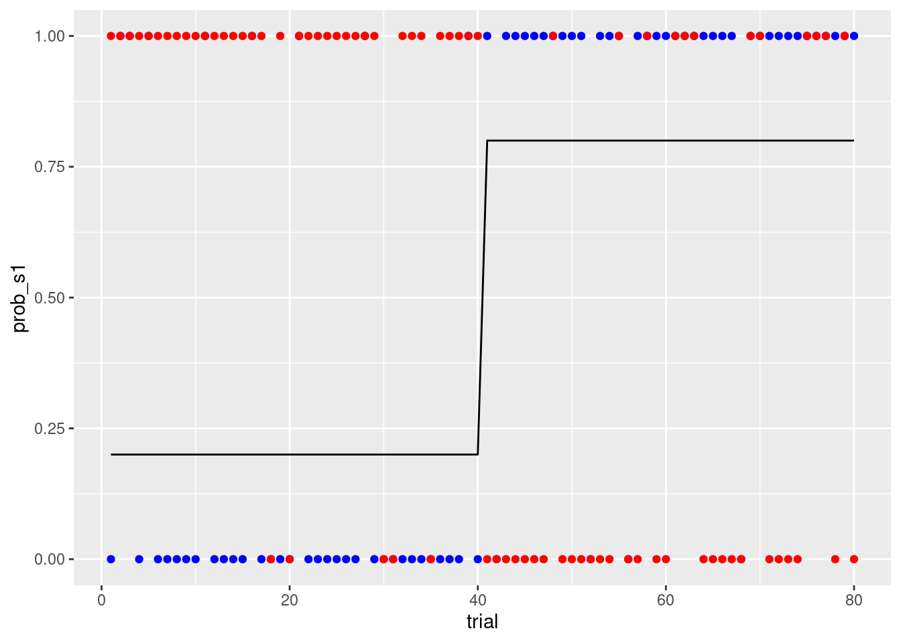
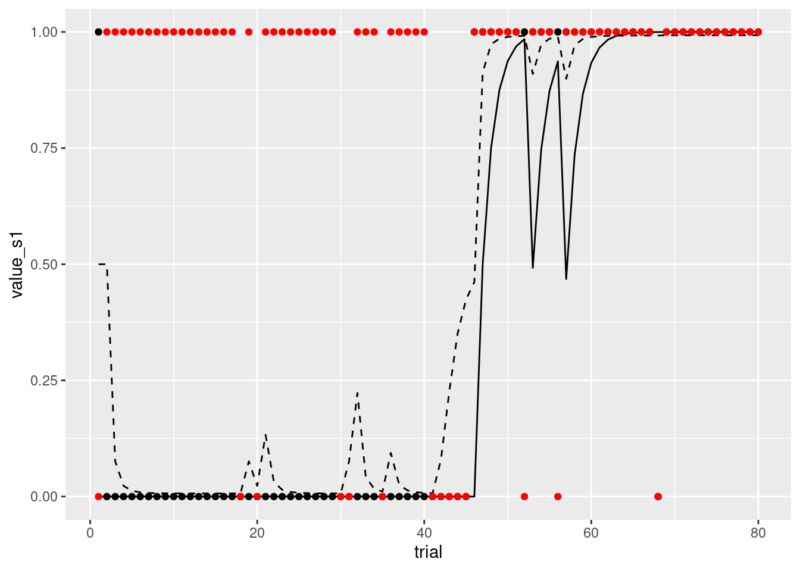
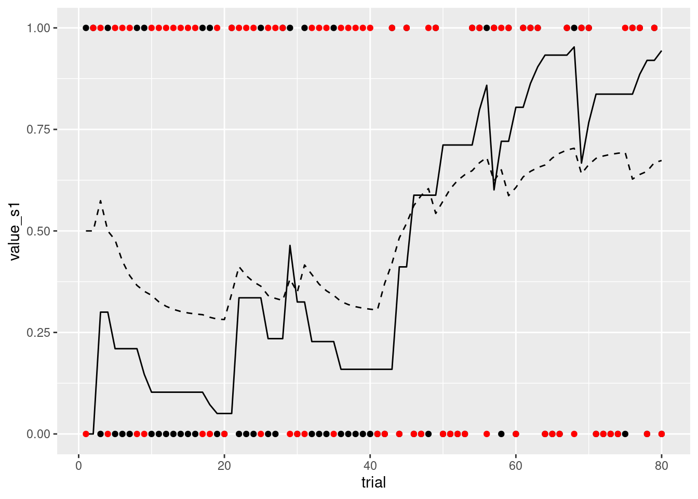
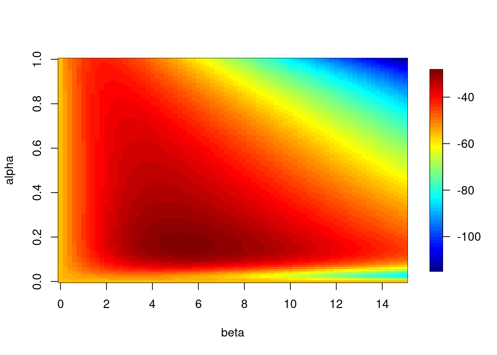
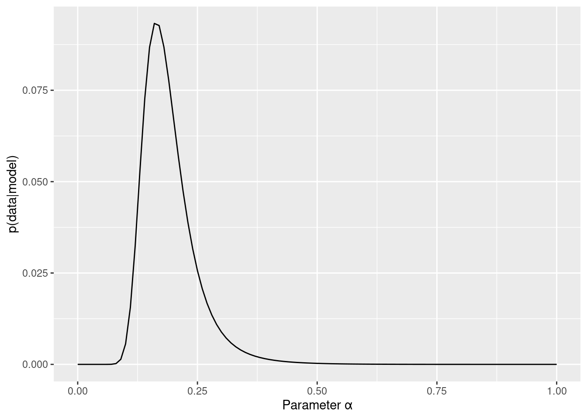
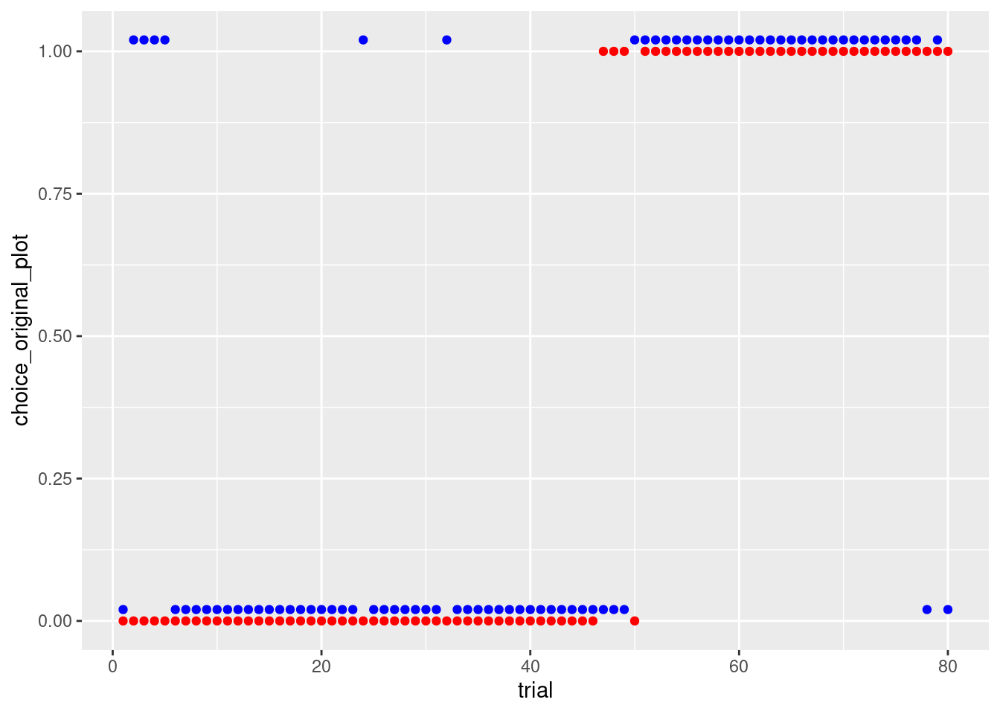
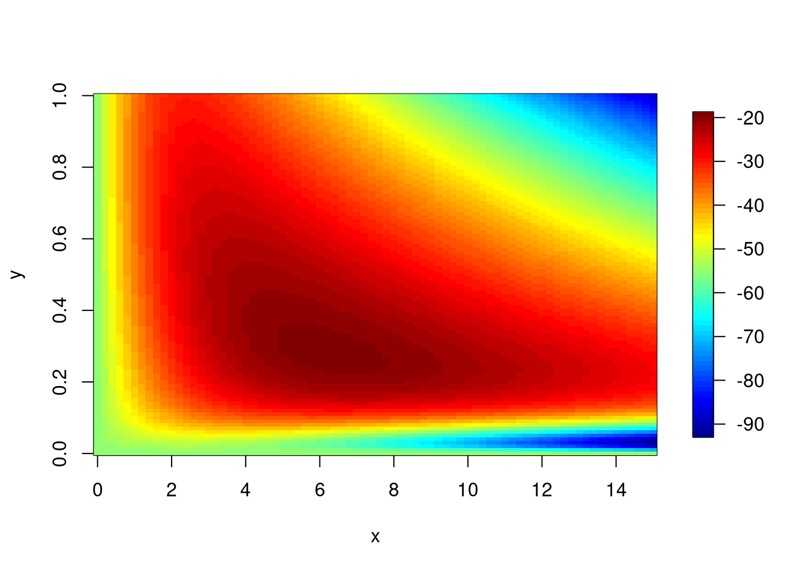
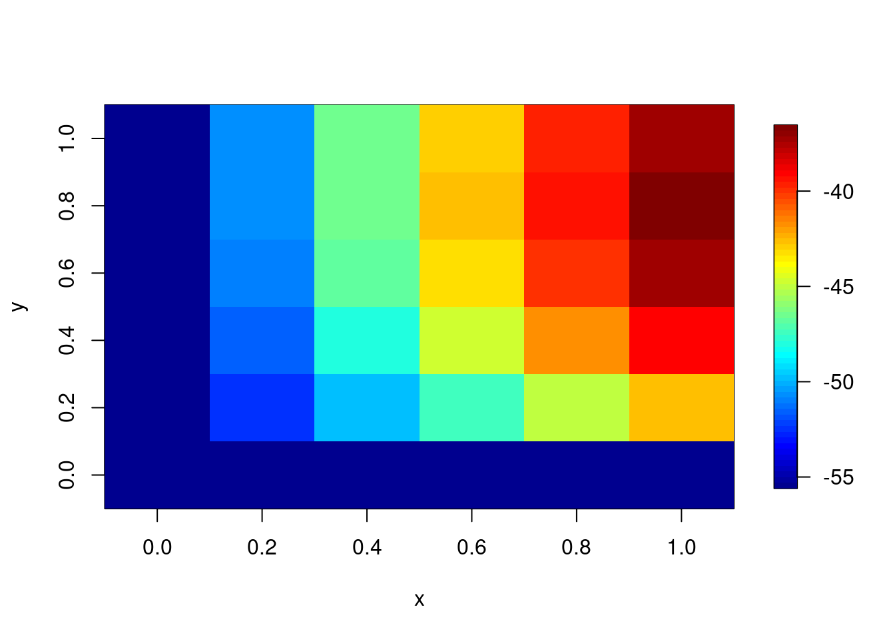

強化学習モデル: 最尤推定
認知モデリングの推奨実践法
Busemeyer & Diederich(2010), Heathcote (2015), Palminteri et al.(2017)を参考に，認知モデリングの推奨実践法をまとめると，以下のようになります。
- A 認知課題と認知モデルを準備
- B 人工データ生成とパラメータリカバリーを確認（モデルや課題の修正）
- C データ収集と行動データを確認
- D パラメータ推定
- E 相対モデル比較
- F モデル・シミュレーションと選択的影響テスト
以降は，上記に従って進めていきます。
使用するRパッケージ
以降で使用するRパッケージは以下になります。
rm(list = ls())
library(tidyverse)
library(fields)
library(pso)A 認知課題と認知モデルを準備
逆転学習課題
逆転学習課題は以下のような課題です。
Cools et al.(2001)：合計80試行（前半40試行，後半逆転して40試行），フィードバックは顔（ポジティブが緑の嬉しい顔，ネガティブが赤の悲しい顔)，報酬:罰比は，80:20。
Cools et al.(2002)を参考に，選択刺激の呈示位置は左右，刺激の選択画面は2000ms呈示されて（2000msを超えると遅いことを伝える「2秒以内に選択してください」），フィードバックは２つの刺激の間に500ms呈示。
den Ouden et al.(2013)を参考に，選択はマウスでクリックする，80試行は疑似ランダム化された事前に決めた順番で提示する，参加者には変化する正答刺激を特定するように教示する。
Waegeman et al.(2014)を参考に，最大2000ms選択画面を呈示する（押したら次に進む），選択した刺激を枠で囲って500ms呈示し，フィードバックを500ms呈示し，500ms-1500ms固視点(+)を呈示する。
この逆転学習課題をjsPsychで作る方法は，jsPsychを用いた認知課題の作成3：確率的逆転学習課題にあります。
逆転学習課題の構造の確認
s1は，前半40試行において20％の確率で報酬のフィードバックがなされ，後半40試行で80%の確率でフィードバックがなされます（s2はその逆になる）。prob_s1とprob_s2に確率を設定して，reward_s1とreward_s2でランダムに80%や20%の確率で報酬が出てくるのを設定します。なお，報酬は１，罰は０としています。
sim_data <- tibble(trial = 1:80,
prob_s1 = rep(c(0.2, 0.8), each = 40),
prob_s2 = rep(c(0.8, 0.2), each = 40),
reward_s1 = ifelse(runif(80) < prob_s1, 1, 0),
reward_s2 = ifelse(runif(80) < prob_s2, 1, 0))プロットして確認します。黒実線は，s1の報酬FB確率で，青色がs1のフィードバック，赤色がs2のフィードバックになります。
sim_data %>%
ggplot(aes(x = trial, y = prob_s1)) +
geom_line() +
geom_point(aes(x = trial, y = reward_s1),colour = 'blue') +
geom_point(aes(x = trial, y = reward_s2),colour = 'red')
強化学習モデル(Q learningモデル)
- Q learningモデルにおける更新式は以下の通りになります。
\[ Q\left(s_{t}, a_{t}\right) \leftarrow Q\left(s_{t}, a_{t}\right)+\alpha\left(r_{t+1}+\gamma \max _{a} Q\left(s_{t+1}, a\right)-Q\left(s_{t}, a_{t}\right)\right) \]
- 今回の逆転学習課題の場合は，状態が1つの特殊なQ learningになります。γのついた項は不要になり，報酬も選択した時点の報酬で更新します。
\[ Q\left(s_{t}, a_{t}\right) \leftarrow Q\left(s_{t}, a_{t}\right)+\alpha\left(r_{t}-Q\left(s_{t}, a_{t}\right)\right) \]
- Qlearningでは，学習した価値を元にして，選択肢を選びます（方策）。
→多くの場合、基本的には価値の高い選択を選びますが，時に価値の高くない方も選択します（探索をする）。
→ここでは，以下のソフトマックス行動選択を方策に採用します。
- ソフトマックス行動選択とは，行動価値関数(Q)を用いて，確率分布（ボルツマン分布）を作ることで方策とする方法です。
→ ざっくり言うと，特定の行動(i)のQ値を，全ての行動(1…m)のQ値の合計で割っている。その際に，Q値にベータをかけて，指数関数にいれています。
- ソフトマックス行動選択は，逆温度(inverse temperature)βで，探索と利用のバランスをとります。β=0でランダム法，βが大きくなるとグリーディ法に近づきます。
\[ P\left(a_{i} \mid s\right)=\frac{\exp \left[\beta Q\left(s, a_{i}\right)\right]}{\sum_{j=1}^{m} \exp \left[\beta Q\left(s, a_{j}\right)\right]} \]
もし選択肢が２つの場合は以下のように書けます（今回は状態もかわらないので，sやaも省略しています）。選択肢AとBがあった場合，Aを選択する確率は,指数関数（β×Aの価値）を{指数関数（β×Aの価値）＋指数関数（β×Bの価値）}で割ったものになります。
βは0に近づくほど、選択確率は0.5に近づきます（価値の差が選択に反映されなくなります）
\[ P(A)=\frac{\exp(\beta Q_{A})}{\exp(\beta Q_{A}) + \exp(\beta Q_{B})} \]
Q learningの関数
上記のQ learningの計算を関数にすると以下のようになります。
q_learning_sim <- function(alpha, beta,data) {
#変数の準備
value_s1 <- 0 # s1の価値(初期値は0)
value_s2 <- 0 # s2の価値(初期値は0)
current_choice <- NULL # ある時点の選択（1=s1，0=s2）
choice_prob_s1 <- NULL # s1の選択確率
reward <- NULL # 報酬
# Qlearningモデル
for (i in 1:nrow(data)){
# s1を選ぶ確率を計算し,一様分布から発生させた乱数が行動選択確率よりも小さい時に1（s1），大きい時に0（s2）
choice_prob_s1[i] <- exp(beta*value_s1[i])/(exp(beta*value_s1[i])+exp(beta*value_s2[i]))
current_choice[i] <- as.integer(runif(1,min=0,max=1) <= choice_prob_s1[i])
#FBを報酬(r)として、価値の更新を行う。
if (current_choice[i] == 1){
reward[i] <- data$reward_s1[i]
#予測誤差の計算
prediction_error <- reward[i] - value_s1[i]
#予測誤差を使ってs1の価値を更新する
value_s1[i+1] <- value_s1[i]+alpha*prediction_error
#s2は更新なし
value_s2[i+1] <- value_s2[i]
}else{
reward[i] <- data$reward_s2[i]
#予測誤差の計算
prediction_error <- reward[i] - value_s2[i]
#予測誤差を使ってs2の価値を更新する
value_s2[i+1] <- value_s2[i]+alpha*prediction_error
#s1は更新なし
value_s1[i+1] <- value_s1[i]
}
}
result <- data.frame(trial = data$trial,
value_s1 = value_s1[1:nrow(data)],
value_s2 = value_s2[1:nrow(data)],
prob_s1 = choice_prob_s1,
choice = current_choice,
reward = reward)
return(result)
}Q learningの関数の動作確認
α，β，各施行の報酬の有無(入力刺激)がはいったデータを指定すればQ leaningを試すことができます（とりあえず，ここでは，プロットして，動作するかだけ確認しましょう）。
result <- q_learning_sim(alpha = 0.5, beta = 5,data = sim_data)
result %>%
ggplot(aes(x = trial, y = value_s1)) +
geom_line() +
geom_line(aes(x = trial, y = prob_s1),linetype="dashed") +
geom_point(aes(x = trial, y = choice)) +
geom_point(aes(x = trial, y = reward), colour = 'red') 
おお，なんか人間っぽいというか知性がある感じがしますね！
B 人工データ生成とパラメータリカバリーを確認（モデルや課題の修正）
人工データの生成
Q learningモデルとソフトマックス行動選択を用いて，個々の参加者のパラメータ推定を行うのが最終的な目標になります。すぐにリアルデータの推定をしたくなりますが，まずはシミュレーション(人工データ生成)から始めます。モデルとパラメータと実験状況（刺激の種類やFBの確率など）を準備して，データを生成してみましょう。その際に，αをβを色々と変更させて，生成されるデータの挙動も確認しましょう！上記で作成したq_learning_sim関数を使えば，以下のようにαをβを色々と変更したときのデータの挙動が確認できます。
result <- q_learning_sim(alpha = 0.3, beta = 1,data = sim_data)
result %>%
ggplot(aes(x = trial, y = value_s1)) +
geom_line() +
geom_line(aes(x = trial, y = prob_s1),linetype="dashed") +
geom_point(aes(x = trial, y = choice)) +
geom_point(aes(x = trial, y = reward), colour = 'red') 
演習
- S2の価値と選択確率もプロットしてみよう！
シミュレーションデータを用いてパラメータリカバリーを行う
パラメータ推定の手順
パラメータ推定の手順は以下になります。
- パラメータを含むモデルを設定
- パラメータを評価する基準を設定
- 最良の評価を与えるパラメータを決定する
- 1.パラメータを含むモデルを設定
→ Q learning model, 方策はソフトマックス行動選択ルールを仮定します（なお，仮定というが重要で，これが真実のモデルは全く無くて，可能性のあるモデルの１つであるという点は意識しておく必要があります）。
- 2.パラメータを評価する基準を設定
→ モデルとパラメータが与えられた時の観察されたデータの尤もらしさ（尤度: Likekihood）を評価基準にします。尤度が高いほど，そのモデル（パラメータ）の仮定は尤もらしいと考えられます。尤度は，実際に選んだ選択肢の行動選択確率を全ての試行でかけ合わせたもの（総積）です。モデルが考えた選択確率がどれくらい実際のデータにフィットしているか調べています。
\[ \text {Likelihood}=\prod_{t=1}^{T} P\left(a_{t}\right) \] 尤度を対数化した対数尤度を使うことが多いです。試行ごとに確率をかけていくと桁が小さくなりすぎるので，対数をとっておきます（例 0.00000000001は対数をとると-25.32844です）。
\[ \text { LogLikelihood }=\log \left(\prod_{t=1}^{T} P\left(a_{t}\right)\right) \]
確率の総積は，桁が小さくなりすぎて計算上の不都合があるので（桁落ちがある），対数化した上で，総和を求めるのが良いです（log(A*B)=log(A)+log(B)という公式があります）。
\[ \text {LogLikelihood}=\sum_{i=1}^{T} \log \left(P\left(a_{t}\right)\right) \]
さて，対数尤度を計算してみましょう！q_learning_simを少し改変して，q_learning_ll関数を作ります。選択確率から選択を生成する部分を削除して，対数尤度の計算をいれたのが大きな変更点です。
q_learning_ll <- function(alpha, beta,data) {
#変数の準備
value_s1 <- 0 # s1の価値(初期値は0)
value_s2 <- 0 # s2の価値(初期値は0)
prob_s1 <- NULL # s1の選択確率
ll <- 0 # 対数尤度
# Qlearningモデル
for (i in 1:nrow(data)){
# s1を選ぶ確率を計算
prob_s1[i] <- exp(beta*value_s1[i])/(exp(beta*value_s1[i])+exp(beta*value_s2[i]))
#FBを報酬(r)として、価値の更新を行う。
if (data$choice[i] == 1){
#予測誤差の計算
prediction_error <- data$reward[i] - value_s1[i]
#予測誤差を使ってs1の価値を更新する
value_s1[i+1] <- value_s1[i]+alpha*prediction_error
#s2は更新なし
value_s2[i+1] <- value_s2[i]
# 対数尤度の計算のために選択したs1を選ぶ確率の対数を加算
ll <- ll + log(prob_s1[i])
}else{
#予測誤差の計算
prediction_error <- data$reward[i] - value_s2[i]
#予測誤差を使ってs2の価値を更新する
value_s2[i+1] <- value_s2[i]+alpha*prediction_error
#s1は更新なし
value_s1[i+1] <- value_s1[i]
# 対数尤度の計算のために選択したs2を選ぶ確率の対数を加算
ll <- ll + log(1-prob_s1[i])
}
}
result <- data.frame(trial = data$trial,
value_s1 = value_s1[1:nrow(data)],
value_s2 = value_s2[1:nrow(data)],
prob_s1 = prob_s1,
choice = data$choice,
reward = data$reward)
return(list(result = result, ll = ll))
}q_learning_simを使って，データ（選択）を生成して，dataに格納します。そして，それを使って，同じαとβの値の時の尤度を計算してみます。
data <- q_learning_sim(alpha = 0.2, beta = 5,data = sim_data)
result <- q_learning_ll(alpha = 0.2, beta = 5,data = data)
result$ll## [1] -21.32361alpha = 0.2, beta = 5で生成されたデータにたいして，alpha = 0.6, beta = 1の時の尤度を計算します。尤度が小さくなったかと思います。他にもαとβを変更して（生成時の値alpha = 0.2, beta = 5に近づけたり，遠ざけたりする），尤度の挙動を確認してみましょう。
result <- q_learning_ll(alpha = 0.6, beta = 1,data = data)
result$ll## [1] -38.75351- 3.最良の評価を与えるパラメータを決定する
→最も尤度が高くなるパラメータを探す（最適化）。最尤推定，ベイズ推定など色々な方法があるが，ここでは，単純なグリッドサーチを用いた最尤推定を行う。
パラメータリカバリー（グリッドサーチ定）
- グリッドサーチは，可能性のあるパラメータの組み合わせを格子状にして，順番に尤度を評価する方法です。指定したパラメータの範囲内で最も高い尤度のパラメータを選択します（最尤推定法：maximum likelihood estimate）
- グリッドは研究者が決めます。今回は，αは0から１まで0.01刻みでサーチし(101個の値)，βは0から15まで0.2刻みでサーチする(76個の値)ことにします(つまり7676個のパラメータの組み合わせで尤度を評価します)。
グリッドサーチ用関数
さて，グリッドサーチをするgrid_search関数を作成します。引数は，選択（choice），報酬(reward)の入ったデータになります。αは0から１まで0.01刻みでサーチし(101個)、βは0から15まで0.2刻みでサーチする(76個)。αとβの組み合わせで，7676個のパラメータの組み合わせを探索する。３次元プロットしたいので，行がbeta，列がalphaで尤度を保存していったstore_3dも作成しています。
grid_search <- function(data) {
# 値を保存する変数の設定
store_alpha <- NULL #サーチしたαの保存
store_beta <- NULL #サーチしたβの保存
store_loglike <- NULL #計算した対数尤度の保存
store_3d <- NULL #３次元プロット用
store_ll <- NULL #store3Dの途中計算用に別途対数尤度を用意する
# グリッドサーチの実施
beta <- 0
for(m in 1:76){
alpha <- 0
for(n in 1:101){
result <- q_learning_ll(alpha, beta,data)
store_alpha[(m-1)*101+n] <- alpha
store_beta[(m-1)*101+n] <- beta
store_loglike[(m-1)*101+n] <- result$ll
store_ll[n] <- result$ll
# alpheを0.01刻みで増やす
alpha <- alpha + 0.01
}
store_3d <- rbind(store_3d,store_ll)
#betaを0.2刻みで増やす
beta <- beta +0.2
}
calc_results<- tibble(store_alpha, store_beta, store_loglike)
return(list(calc_results = calc_results, store_3d = store_3d))
}最尤推定（グリッドサーチ）の実施
grid_search関数を使って，最尤推定値を探します。まず，alpha=0.3,beta=5に設定したq_learning_sim関数でデータを作ります。そして，grid_search関数に作ったdataをいれてグリッドサーチをさせます。ちょっと時間がかかります。
data <- q_learning_sim(alpha = 0.3, beta = 5,data = sim_data)
grid_result <- grid_search(data)３次元データのプロット
αとβと尤度の３次元データをプロットしてみます。データ生成時に設定したパラメータの値周辺になっているでしょうか？
rownames(grid_result$store_3d) <- NULL
alpha <- seq(0,1,0.01)
beta <- seq(0,15,0.2)
image.plot(beta,alpha,grid_result$store_3d)
周辺尤度
3Dプロットだとちょっと判断が難しいので，周辺尤度を求めてみます。例えば，βがどのような値をとるかにかかわらないαの尤度が，αの周辺尤度です。つまり，αの値ごとに，平均尤度を計算する感じです（βも同様です）。
#対数尤度を尤度へ
matrix_ll <- exp(grid_result$store_3d)
# 行（beta）ごとに平均をして、全体の平均で標準化
beta_sum_ll <- rowSums(matrix_ll)
beta_marginal_like <- beta_sum_ll/sum(beta_sum_ll)
beta_marginal_like_data <- data.frame(beta,beta_marginal_like)
colnames(beta_marginal_like_data) <- c("parameter","marginal_like")
# 列（alpha）ごとに平均をして、全体の平均で標準化
alpha_sum_ll <- colSums(matrix_ll)
alpha_marginal_like <- alpha_sum_ll/sum(alpha_sum_ll)
alpha_marginal_like_data <- data.frame(alpha,alpha_marginal_like)
colnames(alpha_marginal_like_data) <- c("parameter","marginal_like")
#プロット
beta_marginal_like_data %>%
ggplot(aes( x = parameter, y = marginal_like)) +
geom_line() +
labs(x="Parameter β", y="p(data|model)")
alpha_marginal_like_data %>%
ggplot(aes( x = parameter, y = marginal_like)) +
geom_line() +
labs(x="Parameter α", y="p(data|model)")
最尤推定値とパラメータリカバリのチェック
最も対数尤度が高いパラメータの値を選択するのが最尤推定法です。which.maxで最も対数尤度の高いパラメータの値をとってきましょう。α=0.3，β=5で作ったデータなので，パラメータリカバリできているか確認しましょう。なお，もともとのデータ生成の部分で確率的な変動が入るので，ある程度誤差がはいります。一致するかというよりは，大幅にずれてないかチェックします。
# 最尤推定値
maxIndex <- which.max(grid_result$calc_results$store_loglike)
paste("最尤推定値: α =",grid_result$calc_results$store_alpha[maxIndex],
"β =",grid_result$calc_results$store_beta[maxIndex],
",対数尤度: Log Likelihood = ",grid_result$calc_results$store_loglike[maxIndex])## [1] "最尤推定値: α = 0.36 β = 4.4 ,対数尤度: Log Likelihood = -26.5071942804073"価値と行動選択確率のプロット（モデル・シミュレーション）
与えられたモデルがデータを生成する能力のことを生成パフォーマンスと言います（Palminteri et al., 2017）。この生成パフォーマンスを検討するには，パラメータ推定によって最もフィットしたパラメータ値と認知モデルを用いてデータ生成を行って，実際の行動レベルでの効果が検出できるのかを検討するモデル・シミュレーションが必要です（Palminteri et al., 2017）。
さっそくグリッドサーチによって推定された最尤推定値を q_learning_sim()に投入して，データ生成をしてみましょう。そして，今回生成されたデータ（選択反応）と最初のデータをまとめたデータセットを作りましょう。
# グリードサーチで推定された最尤推定値を使ってデータを生成する。
sim_estimated <- q_learning_sim(grid_result$calc_results$store_alpha[maxIndex],
grid_result$calc_results$store_beta[maxIndex],sim_data)
data_original_estimated <- tibble(trial = data$trial,
choice_original = data$choice,
choice_estimated = sim_estimated$choice)- 青い点がデータ，赤い点が最尤推定値から生成したデータです(見やすくなるように少しずらしました)。２つは重なっているでしょうか？
data_original_estimated %>%
mutate(choice_original_plot = choice_original +0.02) %>%
ggplot(aes(x = trial, y = choice_original_plot)) +
geom_point(colour = "blue") +
geom_point(aes(x = trial, y = choice_estimated),colour = "red")
- 以下のように，クロス集計して確認することもできます。
table(data_original_estimated$choice_original,data_original_estimated$choice_estimated)##
## 0 1
## 0 31 10
## 1 11 28C データ収集と行動データを確認
では，実験をおこなって，行動データを収集したことにしましょう。以下では，国里が用意した模擬データを使って解析を行います。以下を実行して，データをダウンロードください。
temp <- tempfile()
download.file("https://github.com/kunisatoLab/main/raw/master/materials/data.zip",temp)
unzip(temp)
unlink(temp)データの確認
#データフォルダをカレントディレクトリに設定して中のファイルの情報を取得する
setwd("data")
file_names <- list.files()
file_names## [1] "sub01.csv" "sub02.csv" "sub03.csv" "sub04.csv" "sub05.csv"sub01のデータの確認
sub01.csvをread_csv()で読み込む
sub01 <- read_csv("data/sub01.csv")## Rows: 325 Columns: 13
## ── Column specification ────────────────────────────────────────────────────────
## Delimiter: ","
## chr (5): trial_type, internal_node_id, rt, stimulus, key_press
## dbl (7): trial_index, time_elapsed, button_pressed, left_right_s1, left_righ...
## lgl (1): success
##
## ℹ Use `spec()` to retrieve the full column specification for this data.
## ℹ Specify the column types or set `show_col_types = FALSE` to quiet this message.sub01## # A tibble: 325 × 13
## trial_type trial_index time_elapsed internal_node_id rt stimulus key_press
## <chr> <dbl> <dbl> <chr> <chr> <chr> <chr>
## 1 pavlovia 0 3 0.0-0.0 <NA> <NA> <NA>
## 2 html-keyb… 1 39995 0.0-1.0 3999… "<p><sp… 32
## 3 fullscreen 2 44140 0.0-2.0 <NA> <NA> <NA>
## 4 html-keyb… 3 48023 0.0-3.0 3882… "<p sty… 32
## 5 html-butt… 4 49837 0.0-4.0-0.0 812.… <NA> <NA>
## 6 html-keyb… 5 50340 0.0-4.0-1.0 null "<p sty… null
## 7 html-keyb… 6 51345 0.0-4.0-2.0 null "<p sty… null
## 8 html-keyb… 7 52069 0.0-4.0-3.0 null "<p sty… null
## 9 html-butt… 8 52833 0.0-4.0-0.1 762.… <NA> <NA>
## 10 html-keyb… 9 53335 0.0-4.0-1.1 null "<p sty… null
## # … with 315 more rows, and 6 more variables: success <lgl>,
## # button_pressed <dbl>, left_right_s1 <dbl>, left_right_s2 <dbl>,
## # reward_s1 <dbl>, reward_s2 <dbl>教示とか刺激が出た時(trial_typeがhtml-keyboard-response)やpavloviaの関数(trial_typeがpavlovia)は邪魔なので除外する（このデータはpavloviaで収集されました）。
sub01 %>%
filter(trial_type == "html-button-response")## # A tibble: 80 × 13
## trial_type trial_index time_elapsed internal_node_id rt stimulus key_press
## <chr> <dbl> <dbl> <chr> <chr> <chr> <chr>
## 1 html-butt… 4 49837 0.0-4.0-0.0 812.… <NA> <NA>
## 2 html-butt… 8 52833 0.0-4.0-0.1 762.… <NA> <NA>
## 3 html-butt… 12 55853 0.0-4.0-0.2 489.… <NA> <NA>
## 4 html-butt… 16 59331 0.0-4.0-0.3 1375… <NA> <NA>
## 5 html-butt… 20 63031 0.0-4.0-0.4 1011… <NA> <NA>
## 6 html-butt… 24 66559 0.0-4.0-0.5 928.… <NA> <NA>
## 7 html-butt… 28 70521 0.0-4.0-0.6 1152… <NA> <NA>
## 8 html-butt… 32 73915 0.0-4.0-0.7 756.… <NA> <NA>
## 9 html-butt… 36 77303 0.0-4.0-0.8 1195… <NA> <NA>
## 10 html-butt… 40 80805 0.0-4.0-0.9 1268… <NA> <NA>
## # … with 70 more rows, and 6 more variables: success <lgl>,
## # button_pressed <dbl>, left_right_s1 <dbl>, left_right_s2 <dbl>,
## # reward_s1 <dbl>, reward_s2 <dbl>まず，tiral番号を追加する。次に，s1の報酬確率を追加する(前半40試行は0.8,後半40試行は0.2)。選択に応じたフィードバックを追加する。必要な列だけ選択する。button_pressedはchoiceって名前にする。
sub01 %>%
filter(trial_type == "html-button-response") %>%
mutate(trial = 1:80,
s1_prob = rep(c(0.8,0.2),each = 40),
reward = ifelse(button_pressed == 0, reward_s1, reward_s2)) %>%
select(trial,choice=button_pressed, rt, reward, s1_prob,reward_s1, reward_s2)## # A tibble: 80 × 7
## trial choice rt reward s1_prob reward_s1 reward_s2
## <int> <dbl> <chr> <dbl> <dbl> <dbl> <dbl>
## 1 1 0 812.3649999979534 1 0.8 1 0
## 2 2 0 762.6200000013341 1 0.8 1 1
## 3 3 0 489.58000000129687 1 0.8 1 1
## 4 4 0 1375.0050000016927 1 0.8 1 0
## 5 5 0 1011.4749999993364 1 0.8 1 0
## 6 6 0 928.5450000024866 1 0.8 1 0
## 7 7 0 1152.509999999893 1 0.8 1 0
## 8 8 0 756.2650000036228 1 0.8 1 0
## 9 9 0 1195.609999995213 0 0.8 0 0
## 10 10 0 1268.1650000013178 0 0.8 0 0
## # … with 70 more rowsいい感じなので，これでsub01として上書きする。
sub01 <- sub01 %>%
filter(trial_type == "html-button-response") %>%
mutate(trial = 1:80,
s1_prob = rep(c(0.2,0.8),each = 40),
reward = ifelse(button_pressed == 0, reward_s1, reward_s2)) %>%
select(trial,choice=button_pressed, rt, reward, s1_prob,reward_s1, reward_s2)
sub01## # A tibble: 80 × 7
## trial choice rt reward s1_prob reward_s1 reward_s2
## <int> <dbl> <chr> <dbl> <dbl> <dbl> <dbl>
## 1 1 0 812.3649999979534 1 0.2 1 0
## 2 2 0 762.6200000013341 1 0.2 1 1
## 3 3 0 489.58000000129687 1 0.2 1 1
## 4 4 0 1375.0050000016927 1 0.2 1 0
## 5 5 0 1011.4749999993364 1 0.2 1 0
## 6 6 0 928.5450000024866 1 0.2 1 0
## 7 7 0 1152.509999999893 1 0.2 1 0
## 8 8 0 756.2650000036228 1 0.2 1 0
## 9 9 0 1195.609999995213 0 0.2 0 0
## 10 10 0 1268.1650000013178 0 0.2 0 0
## # … with 70 more rowssub01の選択の可視化
sub01 %>%
ggplot(aes(x = trial, y = s1_prob)) +
geom_line() +
geom_line(aes(x= trial, y = choice), colour = 'blue') +
geom_point(aes(x = trial, y = reward),colour = 'red')5名分のデータを読み込んでlong形式のデータにする
１名ずつ読み込むのは大変なので，一気に処理をしてしまいましょう。for文でfile_namesに入っているデータの数の回数分処理をします。
# 確認用の図を入れる場所を確保
plot_check <- NULL
# データを入れる場所を確保
data_long <- NULL
for (i in 1:length(file_names)) {
# file_namesのi番目のデータを読み込んで,上記の処理をして，tmp_dataに格納
tmp_data <- read_csv(paste("data",file_names[i], sep = "/")) %>%
filter(trial_type == "html-button-response") %>%
mutate(id = rep(i,80),
trial = 1:80,
s1_prob = rep(c(0.2,0.8),each = 40),
reward = ifelse(button_pressed == 0, reward_s1, reward_s2)) %>%
select(id, trial,choice=button_pressed, rt, reward, s1_prob,reward_s1, reward_s2)
# データの保存
data_long <- rbind(data_long, tmp_data)
# plot
plot_check[[i]] <- ggplot(tmp_data, aes(x = trial, y = s1_prob)) +
geom_line() +
geom_line(aes(x= trial, y = choice), colour = 'blue') +
geom_point(aes(x = trial, y = reward),colour = 'red')
}D パラメータ推定
解析の関数化
以降は，繰り返しも多いので，dataフォルダ内のデータに対して，グリッドサーチを用いた最尤推定を行って結果を返す関数を準備します。idに番号をいれたら，そのid番号の参加者のパラメータを推定する関数として，estimate_gridを作りました。長いですが，上でやっていることを並べただけです。
estimate_grid <- function(data, id_no){
#指定したidでグリッドサーチで推定
tmp_data <- data %>%
filter(id == id_no)
tmp_result <- tmp_data %>%
grid_search()
#最尤推定を出力
maxIndex <- which.max(tmp_result$calc_results$store_loglike)
print(paste("最尤推定値: α =",tmp_result$calc_results$store_alpha[maxIndex],
"β =",tmp_result$calc_results$store_beta[maxIndex],
",対数尤度: Log Likelihood = ",tmp_result$calc_results$store_loglike[maxIndex]))
#3dプロットを出力
rownames(tmp_result$store_3d) <- NULL
y <- seq(0,1,0.01)
x <- seq(0,15,0.2)
image.plot(x,y,tmp_result$store_3d)
#対数尤度を尤度へ
matrix_ll <- exp(tmp_result$store_3d)
# 行（beta）ごとに平均をして、全体の平均で標準化
beta_sum_ll <- rowSums(matrix_ll)
beta_marginal_like <- beta_sum_ll/sum(beta_sum_ll)
beta_marginal_like_data <- data.frame(x,beta_marginal_like)
colnames(beta_marginal_like_data) <- c("parameter","marginal_like")
# 列（alpha）ごとに平均をして、全体の平均で標準化
alpha_sum_ll <- colSums(matrix_ll)
alpha_marginal_like <- alpha_sum_ll/sum(alpha_sum_ll)
alpha_marginal_like_data <- data.frame(y,alpha_marginal_like)
colnames(alpha_marginal_like_data) <- c("parameter","marginal_like")
#プロット
p1 <- beta_marginal_like_data %>%
ggplot(aes( x = parameter, y = marginal_like)) +
geom_line() +
labs(x="Parameter β", y="p(data|model)")
print(p1)
p2 <- alpha_marginal_like_data %>%
ggplot(aes( x = parameter, y = marginal_like)) +
geom_line() +
labs(x="Parameter α", y="p(data|model)")
print(p2)
#q値など計算
tmp_q <- q_learning_ll(tmp_result$calc_results$store_alpha[maxIndex],
tmp_result$calc_results$store_beta[maxIndex],
tmp_data)
#データにQ値などを追加
tmp_data$value_s1 <- tmp_q$result$value_s1
tmp_data$value_s2 <- tmp_q$result$value_s2
tmp_data$prob_s1 <- tmp_q$result$prob_s1
p3<- tmp_data %>%
ggplot(aes(x = trial, y = s1_prob)) +
geom_line() +
geom_line(aes(x= trial, y = choice), colour = 'blue') +
geom_line(aes(x= trial, y = prob_s1), colour = 'blue',linetype="dashed") +
geom_point(aes(x = trial, y = reward),colour = 'red') +
geom_line(aes(x= trial, y = value_s1), colour = 'green',linetype="dashed") +
geom_line(aes(x= trial, y = value_s2), colour = 'orange',linetype="dashed")
print(p3)
}モデル・フィッティング
sub01のモデル・フィッティング
上の方で関数を定義したので，１行でいろいろと出力してくれます。なお，sub01は国里がかなりグリーディーな選択をしたので，βが15を越えてしまっています。
estimate_grid(data = data_long, id_no = 1)## [1] "最尤推定値: α = 0.62 β = 15 ,対数尤度: Log Likelihood = -2.44106911935233"sub02のモデル・フィッティング
sub02は，国里が学習率が高くなるように反応をしてみました。
estimate_grid(data = data_long, id = 2)## [1] "最尤推定値: α = 0.870000000000001 β = 1.6 ,対数尤度: Log Likelihood = -44.7140662615762"演習
sub03以降も確認して，自分のデータでも確かめてみよう！
グリッドサーチの注意点
グリッドサーチの場合，探索範囲と探索の細かさは，研究者が決める。grid_search2()として，αは0から1の範囲だがキメが細かくない（0.2刻み）,βは肌目の細かさはかわらないが0から1の範囲で探索する関数を作ってみた。
grid_search2 <- function(data) {
# 値を保存する変数の設定
store_alpha <- NULL #サーチしたαの保存
store_beta <- NULL #サーチしたβの保存
store_loglike <- NULL #計算した対数尤度の保存
store_3d <- NULL #３次元プロット用
store_ll <- NULL #store3Dの途中計算用に別途対数尤度を用意する
# グリッドサーチの実施
beta <- 0
for(m in 1:6){
alpha <- 0
for(n in 1:6){
result <- q_learning_ll(alpha, beta,data)
store_alpha[(m-1)*6+n] <- alpha
store_beta[(m-1)*6+n] <- beta
store_loglike[(m-1)*6+n] <- result$ll
store_ll[n] <- result$ll
# alpheを0.01刻みで増やす
alpha <- alpha + 0.2
}
store_3d <- rbind(store_3d,store_ll)
#betaを0.2刻みで増やす
beta <- beta + 0.2
}
calc_results<- data_frame(store_alpha, store_beta, store_loglike)
return(list(calc_results = calc_results, store_3d = store_3d))
}先程と同じgrid_searchと上記のgrid_search2で推定をしてみます。
data <- q_learning_sim(alpha = 0.3, beta = 6,data = sim_data)
grid_result1 <- grid_search(data)
grid_result2 <- grid_search2(data)## Warning: `data_frame()` was deprecated in tibble 1.1.0.
## Please use `tibble()` instead.
## This warning is displayed once every 8 hours.
## Call `lifecycle::last_lifecycle_warnings()` to see where this warning was generated.元々のグリッドサーチはいい感じに推定できていると思います。
rownames(grid_result1$store_3d) <- NULL
y <- seq(0,1,0.01)
x <- seq(0,15,0.2)
image.plot(x,y,grid_result1$store_3d)
maxIndex <- which.max(grid_result1$calc_results$store_loglike)
paste("最尤推定値: α =",grid_result1$calc_results$store_alpha[maxIndex],
"β =",grid_result1$calc_results$store_beta[maxIndex],
",対数尤度: Log Likelihood = ",grid_result1$calc_results$store_loglike[maxIndex])## [1] "最尤推定値: α = 0.21 β = 6.8 ,対数尤度: Log Likelihood = -10.7381687527344"当たり前ですが，間隔を広げたり，範囲を狭めると，範囲外の推定値は求まりませんし（βは範囲外），きめが荒いので，推定値もずれます。実際は，グリッドサーチではなく，最適化手法を使って最尤推定値を求めたり，ベイズ推定で求めたりします。ただ，推定においては，狭い範囲内で最も良いだけの値（局所最適解という）をもってくる可能性があるのは気をつけないといけません。
maxIndex <- which.max(grid_result2$calc_results$store_loglike)
paste("最尤推定値: α =",grid_result2$calc_results$store_alpha[maxIndex],
"β =",grid_result2$calc_results$store_beta[maxIndex],
",対数尤度: Log Likelihood = ",grid_result2$calc_results$store_loglike[maxIndex])## [1] "最尤推定値: α = 0.6 β = 1 ,対数尤度: Log Likelihood = -33.7595314670729"rownames(grid_result2$store_3d) <- NULL
y <- seq(0,1,0.2)
x <- seq(0,1,0.2)
image.plot(x,y,grid_result2$store_3d)
汎用最適化関数で最尤推定する
グリッドサーチはわかりやすいですが，上記のような問題もあるので，実際のパラメータ推定では，汎用最適化関数を用います。以下では，Rでよく使用されるoptim関数とより洗練されたアルゴリズムである粒子群最適化(Particle Swarm Optimization)を実装したpsoパッケージを用いたパラメータ推定について紹介します。
汎用最適化関数を使うために，q_learning_ll関数を少し変更して，パラメータとデータを与えたら，負の対数尤度を返すq_learning_nll関数を作ります（不要な部分を削除して，最後に対数尤度にマイナスをつけただけです）。
q_learning_nll <- function(par,data) {
alpha <- par[1]
beta <- par[2]
#変数の準備
value_s1 <- 0 # s1の価値(初期値は0)
value_s2 <- 0 # s2の価値(初期値は0)
prob_s1 <- NULL # s1の選択確率
ll <- 0 # 対数尤度
# Qlearningモデル
for (i in 1:nrow(data)){
# s1を選ぶ確率を計算
prob_s1[i] <- exp(beta*value_s1[i])/(exp(beta*value_s1[i])+exp(beta*value_s2[i]))
#FBを報酬(r)として、価値の更新を行う。
if (data$choice[i] == 1){
#予測誤差の計算
prediction_error <- data$reward[i] - value_s1[i]
#予測誤差を使ってs1の価値を更新する
value_s1[i+1] <- value_s1[i]+alpha*prediction_error
#s2は更新なし
value_s2[i+1] <- value_s2[i]
# 対数尤度の計算のために選択したs1を選ぶ確率の対数を加算
ll <- ll + log(prob_s1[i])
}else{
#予測誤差の計算
prediction_error <- data$reward[i] - value_s2[i]
#予測誤差を使ってs2の価値を更新する
value_s2[i+1] <- value_s2[i]+alpha*prediction_error
#s1は更新なし
value_s1[i+1] <- value_s1[i]
# 対数尤度の計算のために選択したs2を選ぶ確率の対数を加算
ll <- ll + log(1-prob_s1[i])
}
}
return(-ll)
}今回は，sub03のデータでグリッドサーチ，optim, psoの推定をしてみましょう。まずは，データを用意して，グリッドサーチをしてみます。
# データの用意
sub03_data <- data_long %>%
filter(id == 3)
# グリッドサーチ
result_grid <- grid_search(sub03_data)
maxIndex <- which.max(result_grid$calc_results$store_loglike)
alpha_grid <- result_grid$calc_results$store_alpha[maxIndex]
beta_grid <- result_grid$calc_results$store_beta[maxIndex]
loglike_grid <- result_grid$calc_results$store_loglike[maxIndex]
print(paste("最尤推定値: α =",result_grid$calc_results$store_alpha[maxIndex],
"β =",result_grid$calc_results$store_beta[maxIndex],
",対数尤度: Log Likelihood = ",result_grid$calc_results$store_loglike[maxIndex]))## [1] "最尤推定値: α = 0.7 β = 2.2 ,対数尤度: Log Likelihood = -38.8582274622813"optim
optimは与えられた関数の出力値を最小化するパラメータを探索する関数です。parにパラメータの初期値（これを変えると結果も変わるので工夫が必要ですが，今回は適当に0.5にしています），fnに負の対数尤度を返す関数，dataにデータ，methodに使用するアルゴリズム（今回は，L-BFGS-Bです），lowerにパラメータの下限（fnで定義しているように，１つ目がα，１つ目がβです），upoerにパラメータの上限（fnで定義しているように，１つ目がα，１つ目がβです）を指定して実行します。
result_optim <- optim(par = c(0.5,0.5),
fn = q_learning_nll,
data = sub03_data,
method = "L-BFGS-B",
lower = c(0,0),
upper = c(1,15))
print(paste("最尤推定値: α =",result_optim$par[1],"β =",result_optim$par[2], ",対数尤度: Log Likelihood = ", -result_optim$value))## [1] "最尤推定値: α = 0.69121145496389 β = 2.26477480079629 ,対数尤度: Log Likelihood = -38.8506377123627"pso
粒子群最適化(pso)は，最小値の探索において，複数の初期値からスタートして，局所的な最小化と全体としての最小化を同時に行うことで局所最適解に陥らないように工夫された最適化アルゴリズムです。粒子群最適化について説明は，こちらが簡潔でわかりやすいかと思います。psoパッケージは，optimと同じ使い方ができるように，引数の設定と出力が同じになっています。optimと同様に以下のように設定して，実行します。
result_pso <- psoptim(par = c(0.5,0.5),
fn = q_learning_nll,
data = sub03_data,
lower = c(0,0),
upper = c(1,15))
print(paste("最尤推定値: α =",result_pso$par[1],"β =",result_pso$par[2], ",対数尤度: Log Likelihood = ", -result_pso$value))## [1] "最尤推定値: α = 0.691211119372265 β = 2.26477599855068 ,対数尤度: Log Likelihood = -38.8506377123594"３つの比較
ほとんど同じ結果になりますが，一応並べてみます。手法選択は，パラメータリカバリの結果を元にして，推定精度とコスト（主に時間的なコスト）を考慮して，選択することになります。
method <- c("grid", "optim", "pso")
alpha <- c(result_grid$calc_results$store_alpha[maxIndex],result_optim$par[1],result_pso$par[1])
beta <- c(result_grid$calc_results$store_beta[maxIndex],result_optim$par[2],result_pso$par[2])
loglikelihood <- c(result_grid$calc_results$store_loglike[maxIndex],-result_optim$value,-result_pso$value)
compare_table <- tibble(method,alpha,beta, loglikelihood)
knitr::kable(compare_table)| method | alpha | beta | loglikelihood |
|---|---|---|---|
| grid | 0.7000000 | 2.200000 | -38.85823 |
| optim | 0.6912115 | 2.264775 | -38.85064 |
| pso | 0.6912111 | 2.264776 | -38.85064 |
引用・参考文献
- Busemeyer, J. R., & Diederich, A. (2010). Cognitive Modeling. SAGE.
- Heathcote, A., Brown, S. D., & Wagenmakers, E.-J. (2015). An Introduction to Good Practices in Cognitive Modeling. In B. U. Forstmann & E.-J. Wagenmakers (Eds.), An Introduction to Model-Based Cognitive Neuroscience (pp. 25–48). Springer New York.
- Palminteri, S., Wyart, V., & Koechlin, E. (2017). The Importance of Falsification in Computational Cognitive Modeling. Trends in Cognitive Sciences, 21(6), 425–433.